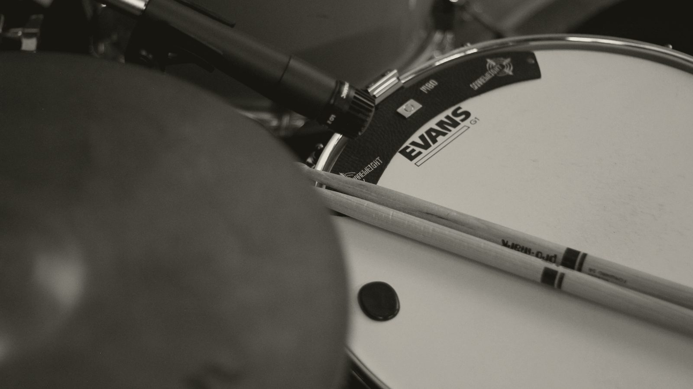

RESEARCH
What music do 80 year olds listen to?
Which years of music people in their late 70s, 80s and 90s grew up with, why the Beatles may suit an 80th birthday better than big band, and how to find out what one person loves.

- On average, the songs that mean the most to people come from their teens. Two recent studies put the peak at around 14 and at 17.
- Someone who's 80 in 2026 was a teenager in the early 1960s, so the Beatles may suit them better than big band, which was their parents' music.
- In one study, the oldest listeners liked music from the widest range of years.
- These are averages, so the surest way to know what one person loves is to ask them or their family.
Someone puts on big band music for an 80th birthday, since it seems like the safe choice for an 80-year-old, and the guest of honor would much rather hear the Beatles. That makes sense once you work out when they were a teenager.
What music do 80 year olds like? #
Researchers have found that the songs people remember best, and the ones that mean the most to them, tend to come from their teens. In a 2020 study of 470 people aged 18 to 82, the songs that brought back the most memories came from each person’s adolescence. They peaked around age 14, inside a wider span of roughly ages 10 to 30. In a 2025 study of 1,891 people in many countries, researchers put the peak for personally meaningful songs at age 17.
Using those two studies, we did the arithmetic for each age in 2026. In the table, the “Strongest around” column is the years someone was 14 to 17.
| Age | The years they were 10 to 30 | Strongest around |
|---|---|---|
| 75 | 1961 to 1981 | 1965 to 1968 |
| 80 | 1956 to 1976 | 1960 to 1963 |
| 85 | 1951 to 1971 | 1955 to 1958 |
| 90 | 1946 to 1966 | 1950 to 1953 |
| 95 | 1941 to 1961 | 1945 to 1948 |
So someone who’s 80 this year was a teenager in the early 1960s. They were 17 or 18 when the Beatles first played The Ed Sullivan Show in February 1964, and big band was their parents’ music.
That doesn’t make big band a bad choice, though. In a 2013 Cornell study, 62 college students remembered and liked the music of their own lifetime, and also the music of their parents’ youth. The researchers thought that came from hearing it at home as children. Those were college students, but it’s a reasonable guess that the same is true for older listeners. Big band can still have a place on the song list, just probably not the whole of it.
What music do people in their 90s like? #
It’s the same pattern, just earlier. Someone who’s 95 in 2026 was a teenager in the second half of the 1940s.
The pull of those years may be stronger the older someone is. In a 2017 study of people born from 1940 to 1999, researchers found that they preferred the music of their late teens and early twenties, and that the pull was stronger in the older listeners.
Do older people only like old music? #
Many older listeners like music from a lot of different years. In that same 2017 study, the oldest listeners liked music from the widest range of years.
In a small German study from 2015, researchers played 80 number-one hits from 1930 to 2010 to 48 adults whose average age was 67. Songs from when they were 15 to 24 hit hardest, but songs from across five decades of their lives still brought back memories.
How do you find out what someone likes? #
The surest way is to ask them. These studies all describe averages, and any one person may have a favorite decade of their own. If you can’t ask them, their family may know what they used to play at home.
Our musicians play the standards and the songs of the fifties, sixties and seventies, and they take requests. For a birthday party, tell us the guest of honor’s age and a few songs they love, and we’ll build the song list from there. If the grandchildren will be there too, you can find ideas for the younger guests in our post on party music for all ages.
Sources
- Jakubowski, K., Eerola, T., Tillmann, B., Perrin, F., and Heine, L. (2020). A cross-sectional study of reminiscence bumps for music-related memories in adulthood. Music & Science. Read the source
- Burunat, I., and others (2025). Memory bumps across the lifespan in personally meaningful music. Memory. Read the source
- Krumhansl, C. L., and Zupnick, J. A. (2013). Cascading reminiscence bumps in popular music. Psychological Science. Read the source
- Krumhansl, C. L. (2017). Listening niches across a century of popular music. Frontiers in Psychology. Read the source
- Platz, F., Kopiez, R., Hasselhorn, J., and Wolf, A. (2015). The impact of song-specific age and affective qualities of popular songs on music-evoked autobiographical memories. Musicae Scientiae. Read the source